2 Understanding
2.1 Initial Import and Data Prep
# import dataset
#list of common NA substitution terms
# 0 is not included intentionally
pot_nas <- c("", " ", " ", ".", ",", "NaN", "NAN", "nan", "NA", "na", "N/A", "n/a")
# To make checking for missing values, including the read_csv(,na) argument allows us to assign all missing values defined in pot_nas as NA
transactions <- read_csv("./core_data/transactions.csv", na = pot_nas)## Parsed with column specification:
## cols(
## date = col_character(),
## customer_id = col_character(),
## industry = col_double(),
## location = col_double(),
## monthly_amount = col_double()
## )## [1] "date" "customer_id" "industry" "location"
## [5] "monthly_amount"# rename date to trdate due to potential issues with R date function
tname <- names(transactions)
tname[1] <- "trdate"
names(transactions) <- tname
#check for NA values
if (nrow(transactions) == nrow(na.omit(transactions))){
print("no missing values")
} else {
print("missing values present")
}## [1] "no missing values"## Classes 'spec_tbl_df', 'tbl_df', 'tbl' and 'data.frame': 94248 obs. of 5 variables:
## $ trdate : chr "1/1/13" "1/2/13" "1/3/13" "1/4/13" ...
## $ customer_id : chr "70efdf2ec9b086079795c442636b55fb" "70efdf2ec9b086079795c442636b55fb" "70efdf2ec9b086079795c442636b55fb" "70efdf2ec9b086079795c442636b55fb" ...
## $ industry : num 8 8 8 8 8 8 8 8 8 8 ...
## $ location : num 9 9 9 9 9 9 9 9 9 9 ...
## $ monthly_amount: num 753851 651548 1138769 659739 770675 ...
## - attr(*, "spec")=
## .. cols(
## .. date = col_character(),
## .. customer_id = col_character(),
## .. industry = col_double(),
## .. location = col_double(),
## .. monthly_amount = col_double()
## .. )# date variable not returned in date format
transactions$trdate <- as.Date(transactions$trdate, format = "%d/%m/%y")
# update industry, customer and location as they are all factors
transactions$customer_id <- as.factor(transactions$customer_id)
transactions$industry <- as.factor(transactions$industry)
transactions$location <- as.factor(transactions$location)
# double check formatting
str(transactions)## Classes 'spec_tbl_df', 'tbl_df', 'tbl' and 'data.frame': 94248 obs. of 5 variables:
## $ trdate : Date, format: "2013-01-01" "2013-02-01" ...
## $ customer_id : Factor w/ 4464 levels "000a91f3e374e6147d58ed1814247508",..: 1970 1970 1970 1970 1970 1970 1970 1970 1970 1970 ...
## $ industry : Factor w/ 10 levels "1","2","3","4",..: 8 8 8 8 8 8 8 8 8 8 ...
## $ location : Factor w/ 10 levels "1","2","3","4",..: 9 9 9 9 9 9 9 9 9 9 ...
## $ monthly_amount: num 753851 651548 1138769 659739 770675 ...
## - attr(*, "spec")=
## .. cols(
## .. date = col_character(),
## .. customer_id = col_character(),
## .. industry = col_double(),
## .. location = col_double(),
## .. monthly_amount = col_double()
## .. )## trdate customer_id industry
## Min. :2013-01-01 0023a1e3447fdb31836536cc903f1310: 47 1 :44901
## 1st Qu.:2014-05-01 006c64491cb8acf2092ce0e0341797fe: 47 2 :22043
## Median :2015-06-01 0079e3e6d496ad07cee7fd63d3d7c9b2: 47 3 : 8336
## Mean :2015-03-26 00989c20ff1386dc386d8124ebcba1a5: 47 4 : 5896
## 3rd Qu.:2016-03-01 00bbd6beace7365b27a913db75fddce9: 47 7 : 3912
## Max. :2016-11-01 01882513d5fa7c329e940dda99b12147: 47 5 : 3341
## (Other) :93966 (Other): 5819
## location monthly_amount
## 2 :21410 Min. : 0
## 1 :17660 1st Qu.: 95323
## 5 : 9703 Median : 179399
## 4 : 9351 Mean : 395397
## 6 : 7446 3rd Qu.: 375439
## 7 : 7317 Max. :100000000
## (Other):21361The summary shows; * Date range from Jan 2013 to Dec 2016 * 4464 unique customers * All 10 locations and industries are represtened * There is a disproportionate number of transactions in industires 1 & 2 * There is a disproportionate number of transactions in locations 1 & 2 * The monthly transaction amounts range from 0 - 100M ** The mean is 395396 and median is 179399, low considering the range
2.2 Data Quality
2.3 Initial Understanding
2.3.1 Customers
# Do all customer have equal numbers of transactions?
## counts transactions by customer_id, formats as a table
number_of_transactions_per_customer <- as.data.frame(table(transactions$customer_id))
summary(number_of_transactions_per_customer)## Var1 Freq
## 000a91f3e374e6147d58ed1814247508: 1 Min. : 1.00
## 0014fcb3db4c8459d26309b177005b10: 1 1st Qu.: 8.00
## 0023a1e3447fdb31836536cc903f1310: 1 Median :18.00
## 0023daa5a44ef6fbe42379f24e00254c: 1 Mean :21.11
## 0029f088c57ad3b6ec589f9ba4f7a057: 1 3rd Qu.:33.00
## 003af5a042e00ac9b489153a81d676ca: 1 Max. :47.00
## (Other) :4458# Answer - No
# Do any customers have duplicate transactions on the same date?
## creates a dataframe of the trdate and customer_id columns
duplicate_check <- transactions %>%
select(trdate, customer_id)
## appends a column to the dataframe if there is a duplicate transaction
duplicate_check$dup <- transactions %>%
select(trdate, customer_id) %>%
duplicated()
## creates a table of rows that are duplicates
dup_check_sum <- duplicate_check %>%
filter(duplicate_check$dup == "TRUE")
## if there are no entries, therefore no duplicates in the new table prints "no duplicates
if (nrow(dup_check_sum) == 0){
print ("No duplicates")
} else{
print("Yes duplicates")
}## [1] "No duplicates"# Answer - No
# Do any customers operate across industries?
## selects the columns customer_id and industry and then writes unique entries to dataframe
industry_check <- transactions %>%
select(industry, customer_id) %>%
distinct()
## selects only the customer id and checks for duplicates
industry_check$multi_industry <- industry_check %>%
select(customer_id) %>%
duplicated()
## if the customer id is duplicated, that means that it appeared in more than one industry
## same as duplicate check for dates
industry_checksum <- industry_check %>%
filter(multi_industry == "TRUE")
if (nrow(industry_checksum) == 0){
print ("No duplicate")
} else{
print("Yes duplicates")
}## [1] "No duplicate"# Answer - No
# Do any customers operate across locations?
## same process as industry but for location
location_check <- transactions %>%
select(location, customer_id) %>%
distinct()
location_check$multi_location <- location_check %>%
select(customer_id) %>%
duplicated()
location_checksum<- location_check %>%
filter(multi_location == "TRUE")
if (nrow(location_checksum) == 0){
print ("No")
} else{
print("Yes")
}## [1] "No"2.3.2 Industry
# Number of transactons per industry
## using only customer_id and industry, creates a bar plot, counting how many times each industry appeared
transactions %>%
select(customer_id, industry) %>%
ggplot(aes(x = industry)) + geom_bar()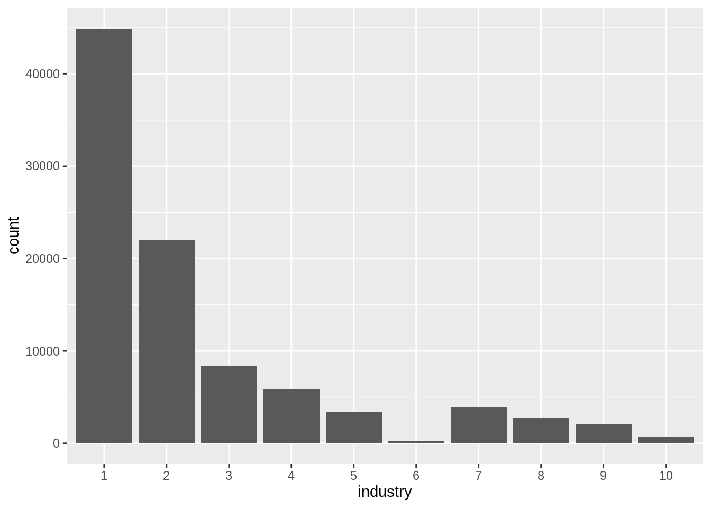
# Industries 1 & 2 have a much larger number of transactions, similarly industries 6 & 10 appear quite low
## create a summary of transactions per industry in a table
number_of_transactions_per_industry <- as.data.frame(table(transactions$industry))
## give the columns readable names
names(number_of_transactions_per_industry) <- c("industry", "count")
number_of_transactions_per_industry## industry count
## 1 1 44901
## 2 2 22043
## 3 3 8336
## 4 4 5896
## 5 5 3341
## 6 6 195
## 7 7 3912
## 8 8 2815
## 9 9 2090
## 10 10 719# calculates mean of transactions per industry
ntpi_mean <- mean(number_of_transactions_per_industry$count)
## calculates standard deviation of transactions per industry
ntpi_sd <- sd(number_of_transactions_per_industry$count)
## calculates standard deviations from mean for each count
number_of_transactions_per_industry$SDs <- (number_of_transactions_per_industry$count - ntpi_mean)/ntpi_sd
number_of_transactions_per_industry## industry count SDs
## 1 1 44901 2.53884748
## 2 2 22043 0.90301908
## 3 3 8336 -0.07791976
## 4 4 5896 -0.25253790
## 5 5 3341 -0.43538599
## 6 6 195 -0.66052888
## 7 7 3912 -0.39452248
## 8 8 2815 -0.47302908
## 9 9 2090 -0.52491356
## 10 10 719 -0.62302892# industry 1 is 2.5 standard deviations from the mean however industry 2 is within 1 standard deviation
# number of customer per industry
## creates a bar plot, counting how many times each industry appeared
transactions %>%
## selects only unique customer id's per industry so each customer is only counted once
distinct(customer_id, industry) %>%
ggplot(aes(x = industry)) + geom_bar()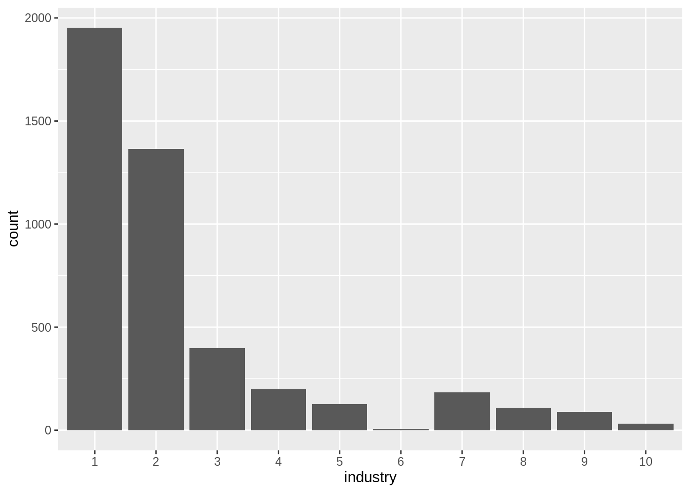
# a similar trend appears in the number of customers, likely as each customer can have a maximum of 47 transactions
## creates a table summarising each customer into a single entry, keeping other information
number_of_customers_per_industry <- group_by(transactions, customer_id, industry) %>%
summarise(mean_amount = mean(monthly_amount))
## organises counts into a dataframe
number_of_customers_per_industry <- as.data.frame(table(number_of_customers_per_industry$industry))
## readable column headers
names(number_of_customers_per_industry) <- c("industry", "count")
number_of_customers_per_industry## industry count
## 1 1 1953
## 2 2 1364
## 3 3 399
## 4 4 199
## 5 5 127
## 6 6 7
## 7 7 184
## 8 8 109
## 9 9 90
## 10 10 32## deviations from mean count
ncpi_mean <- mean(number_of_customers_per_industry$count)
ncpi_sd <- sd(number_of_customers_per_industry$count)
number_of_customers_per_industry$SDs <- (number_of_customers_per_industry$count - ncpi_mean)/ncpi_sd
number_of_customers_per_industry## industry count SDs
## 1 1 1953 2.27363548
## 2 2 1364 1.38476564
## 3 3 399 -0.07153214
## 4 4 199 -0.37335551
## 5 5 127 -0.48201193
## 6 6 7 -0.66310595
## 7 7 184 -0.39599227
## 8 8 109 -0.50917603
## 9 9 90 -0.53784925
## 10 10 32 -0.62537803# industry 1 has 2.2 standard deviation higher customer count, this skews the sd count for other industries
# industry 7 only has a total of 7 customers
## subset data for industry 6
industry_6 <- transactions %>%
filter(industry == 6)
summary(industry_6)## trdate customer_id industry
## Min. :2013-01-01 6c530aae768250b8d9c3c908a13ee287:47 6 :195
## 1st Qu.:2013-10-01 d278df4919453195d221030324127a0e:47 1 : 0
## Median :2014-07-01 23755432da68528f115c9633c0d7834f:28 2 : 0
## Mean :2014-08-30 ecf4afbea9a7f57c4c6da70593361d67:22 3 : 0
## 3rd Qu.:2015-07-01 8196e8d0f9ee7dfdfc7e11dbbfa30d77:21 4 : 0
## Max. :2016-11-01 a2a7902052d85a18a7b564d8872f1ff6:19 5 : 0
## (Other) :11 (Other): 0
## location monthly_amount
## 1 :195 Min. : 0
## 2 : 0 1st Qu.: 680283
## 3 : 0 Median : 21588432
## 4 : 0 Mean : 27063231
## 5 : 0 3rd Qu.: 47028767
## 6 : 0 Max. :100000000
## (Other): 0## [1] 195# 195 total entries for industry 6
# all 7 customers in industry 6 operate in location 1
# the range is still 0-100M meaning both values exist in industry 6
#try removing the industry subset and checking table summary
## subset data without industry 6
industry_no_6 <- transactions %>%
filter(industry != 6)
summary(industry_no_6)## trdate customer_id industry
## Min. :2013-01-01 0023a1e3447fdb31836536cc903f1310: 47 1 :44901
## 1st Qu.:2014-05-01 006c64491cb8acf2092ce0e0341797fe: 47 2 :22043
## Median :2015-06-01 0079e3e6d496ad07cee7fd63d3d7c9b2: 47 3 : 8336
## Mean :2015-03-27 00989c20ff1386dc386d8124ebcba1a5: 47 4 : 5896
## 3rd Qu.:2016-03-01 00bbd6beace7365b27a913db75fddce9: 47 7 : 3912
## Max. :2016-11-01 01882513d5fa7c329e940dda99b12147: 47 5 : 3341
## (Other) :93771 (Other): 5624
## location monthly_amount
## 2 :21410 Min. : 45986
## 1 :17465 1st Qu.: 95230
## 5 : 9703 Median : 179018
## 4 : 9351 Mean : 340107
## 6 : 7446 3rd Qu.: 373432
## 7 : 7317 Max. :64935696
## (Other):213612.3.3 Industry 6
# if all zero values in the dataset are in industry 6, are zero values common?
industry_6 %>%
filter(monthly_amount == 0)## # A tibble: 1 x 5
## trdate customer_id industry location monthly_amount
## <date> <fct> <fct> <fct> <dbl>
## 1 2015-03-01 23755432da68528f115c9633c0d7834f 6 1 0#only one monthly amount of 0, and the next lowest is 45k in the dataset indicates its inclusion is likely and error
# remove this value from industry_6 subset and main dataset
industry_6 <- industry_6 %>%
filter(monthly_amount != 0)
transactions <- transactions %>%
filter(monthly_amount != 0)
## plotting monlthy amount against date, colouring the plot by customer_id
ggplot(industry_6, aes(x = trdate, y = monthly_amount, color = customer_id)) +
#changes the opacity of each point so overlapping points are easier to differentiate
geom_point(alpha = 0.5) +
facet_wrap(industry_6$customer_id)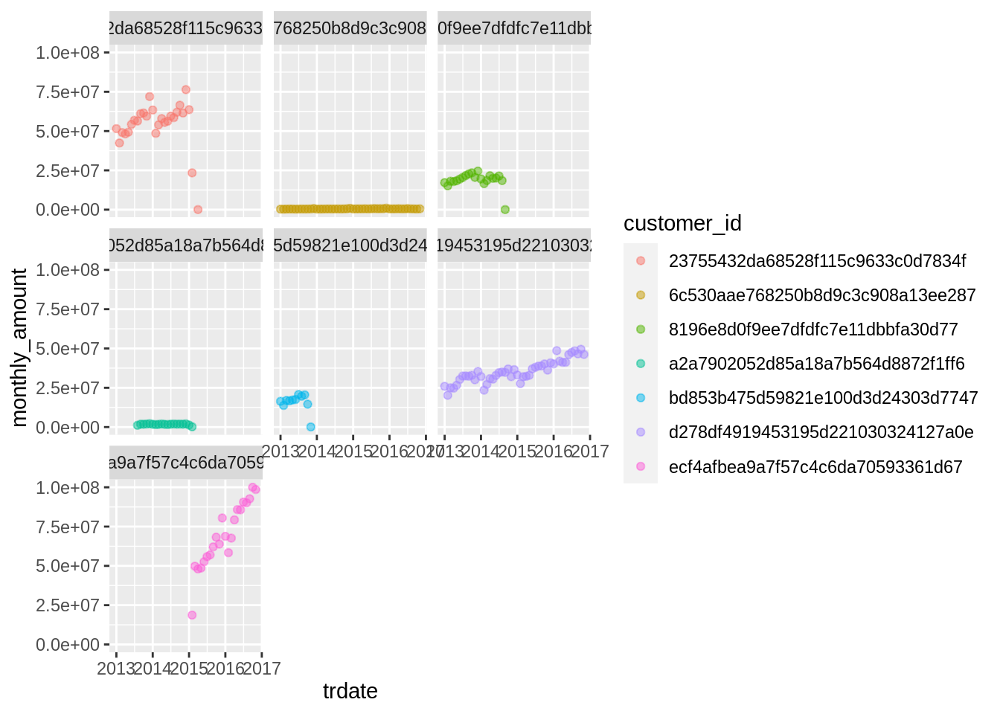
#mean of each customer's monthly payments in industry_6
i6_customer_summary <- industry_6 %>%
group_by(customer_id) %>%
summarise(mean_amount = mean(monthly_amount))
i6_customer_summary## # A tibble: 7 x 2
## customer_id mean_amount
## <fct> <dbl>
## 1 23755432da68528f115c9633c0d7834f 54404455.
## 2 6c530aae768250b8d9c3c908a13ee287 494993.
## 3 8196e8d0f9ee7dfdfc7e11dbbfa30d77 18846950.
## 4 a2a7902052d85a18a7b564d8872f1ff6 1680022.
## 5 bd853b475d59821e100d3d24303d7747 15806921.
## 6 d278df4919453195d221030324127a0e 35334792.
## 7 ecf4afbea9a7f57c4c6da70593361d67 69219425.# it appears the 100M ammount is correct from the plot if it belongs to customer ecf
industry_6 %>%
filter(monthly_amount == 100000000)## # A tibble: 1 x 5
## trdate customer_id industry location monthly_amount
## <date> <fct> <fct> <fct> <dbl>
## 1 2016-10-01 ecf4afbea9a7f57c4c6da70593361d67 6 1 100000000# it does, it will remain in the dataset
# check the distribution of the main dataset with and without industry 6
# with industry 6 (the large spread indicated a need for more bins)
ggplot(transactions, aes(x = monthly_amount)) + geom_histogram(bins = 1000)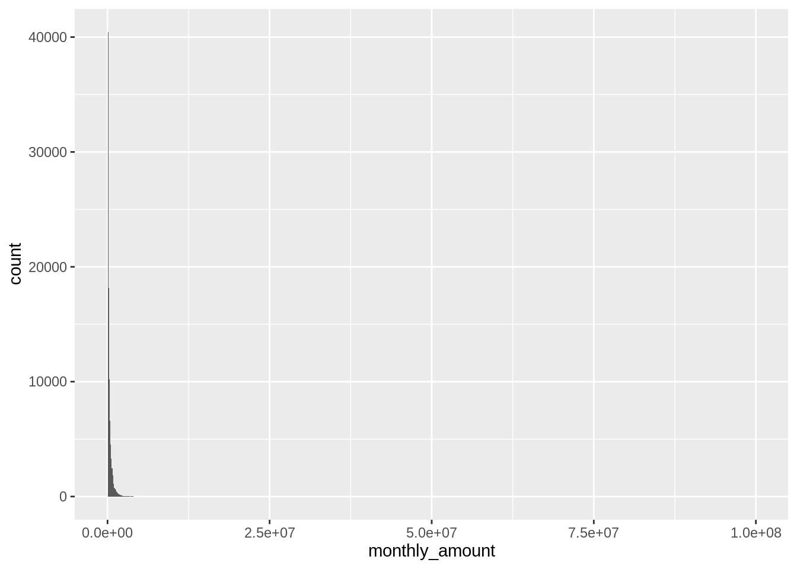
#the data is heavily skewed industry 6's high amounts for customer 6c530aae768250b8d9c3c908a13ee287 appear to be outliers
# without industry 6
## remake industry_no_6 subset due to removal of 0 transactions
industry_no_6 <- transactions %>%
filter(industry != 6)
summary(industry_no_6)## trdate customer_id industry
## Min. :2013-01-01 0023a1e3447fdb31836536cc903f1310: 47 1 :44901
## 1st Qu.:2014-05-01 006c64491cb8acf2092ce0e0341797fe: 47 2 :22043
## Median :2015-06-01 0079e3e6d496ad07cee7fd63d3d7c9b2: 47 3 : 8336
## Mean :2015-03-27 00989c20ff1386dc386d8124ebcba1a5: 47 4 : 5896
## 3rd Qu.:2016-03-01 00bbd6beace7365b27a913db75fddce9: 47 7 : 3912
## Max. :2016-11-01 01882513d5fa7c329e940dda99b12147: 47 5 : 3341
## (Other) :93771 (Other): 5624
## location monthly_amount
## 2 :21410 Min. : 45986
## 1 :17465 1st Qu.: 95230
## 5 : 9703 Median : 179018
## 4 : 9351 Mean : 340107
## 6 : 7446 3rd Qu.: 373432
## 7 : 7317 Max. :64935696
## (Other):21361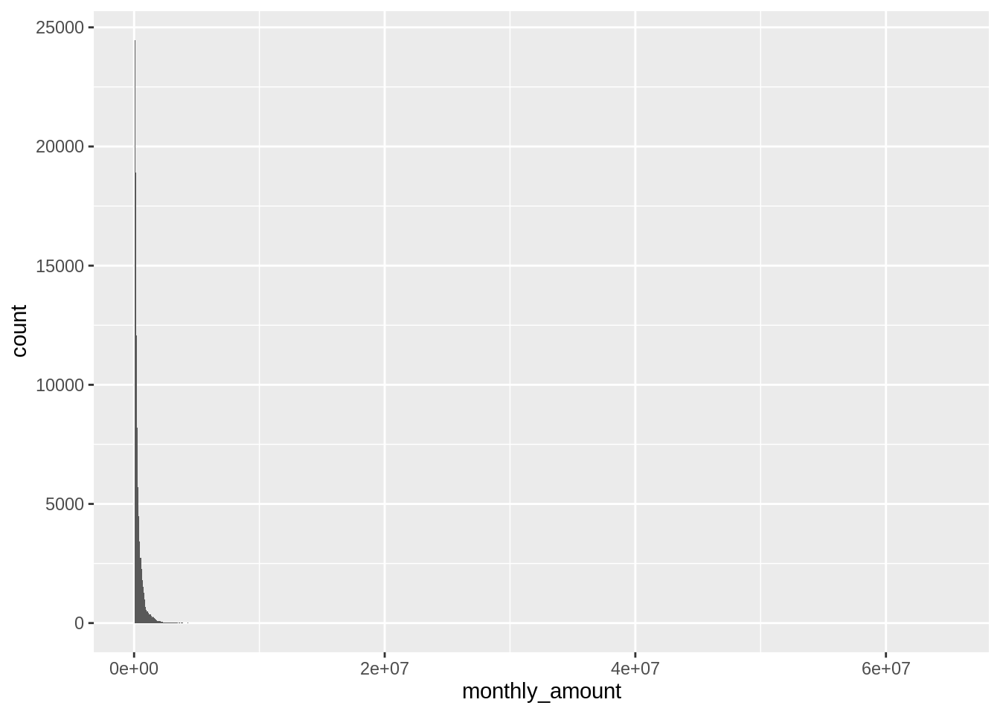
# the data is still quite skewed this will need to be addressed later
# the plots for the customer in industry 6 except 6c530aae768250b8d9c3c908a13ee287 and a2a7902052d85a18a7b564d8872f1ff6 appear legitimate at this scale a closer inspection of those two customers is needed to reduce the issues with scaling
# customer 6c530aae768250b8d9c3c908a13ee287
industry_6 %>%
filter(customer_id == "6c530aae768250b8d9c3c908a13ee287") %>%
ggplot(aes(x= trdate, y = monthly_amount)) + geom_point(alpha = 0.5)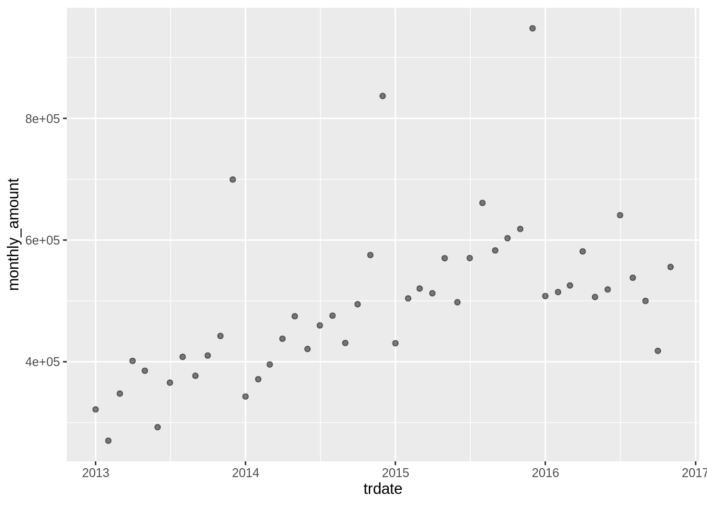
# customer a2a7902052d85a18a7b564d8872f1ff6
industry_6 %>%
filter(customer_id == "a2a7902052d85a18a7b564d8872f1ff6") %>%
ggplot(aes(x= trdate, y = monthly_amount)) + geom_point(alpha = 0.5)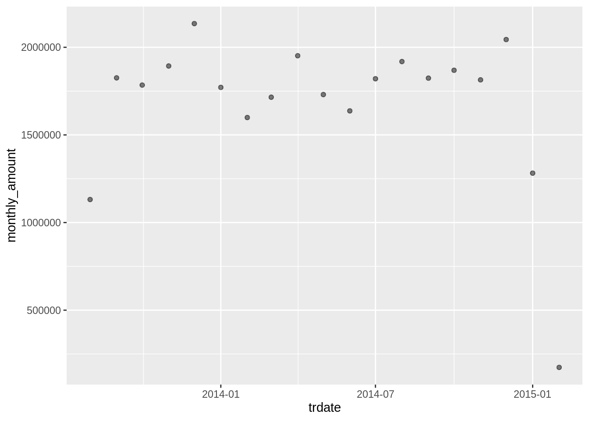
2.3.4 Industry 10
# A look into industry 10
industry_10 <- transactions %>%
filter(industry == 10)
summary(industry_10)## trdate customer_id industry
## Min. :2013-01-01 0079e3e6d496ad07cee7fd63d3d7c9b2: 47 10 :719
## 1st Qu.:2013-10-01 6410bb923bcf940b7c57331f7b7db3c6: 47 1 : 0
## Median :2014-11-01 82aa4b0af34c2313a562076992e50aa3: 47 2 : 0
## Mean :2014-10-27 99701e768d9a09b314e43a1d9e3e9dfa: 47 3 : 0
## 3rd Qu.:2015-12-01 9a0f86604fa1dc1686a0cad86a808a5c: 47 4 : 0
## Max. :2016-11-01 d714d2c5a796d5814c565d78dd16188d: 47 5 : 0
## (Other) :437 (Other): 0
## location monthly_amount
## 5 :315 Min. : 63982
## 2 :167 1st Qu.: 96779
## 8 : 94 Median : 154789
## 7 : 61 Mean : 2926552
## 4 : 29 3rd Qu.: 246281
## 9 : 21 Max. :64935696
## (Other): 32ggplot(industry_10, aes(x = trdate, y = monthly_amount)) +
geom_point(alpha = 0.5) +
facet_wrap(industry_10$location)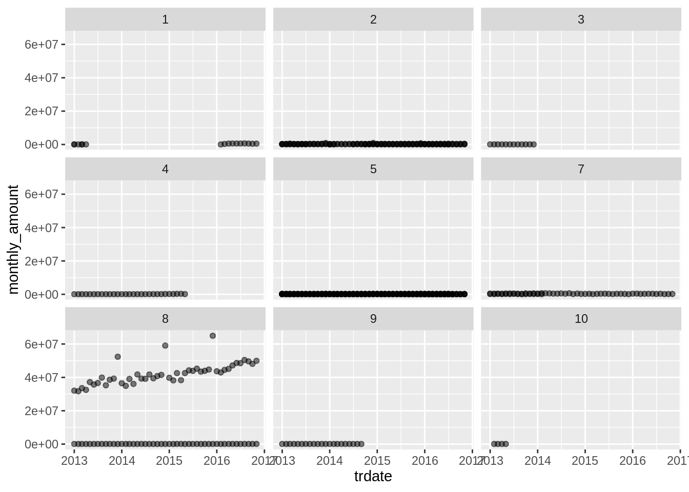
# the number of transactions by location within industry 10 appear quite inconsistent
industry_10_locations <- as.data.frame(table(industry_10$location))
## give the columns readable names
names(industry_10_locations) <- c("location", "count")
industry_10_locations## location count
## 1 1 16
## 2 2 167
## 3 3 12
## 4 4 29
## 5 5 315
## 6 6 0
## 7 7 61
## 8 8 94
## 9 9 21
## 10 10 4# industry 10 is missing location 6
# is it possible industry 6 in location 1 corresponds to industry 10 location 6?
# industry 10 location 10 only has 4 entires
ggplot(filter(industry_10, location == 10), aes(x = trdate, y = monthly_amount)) +
geom_point(alpha = 0.5)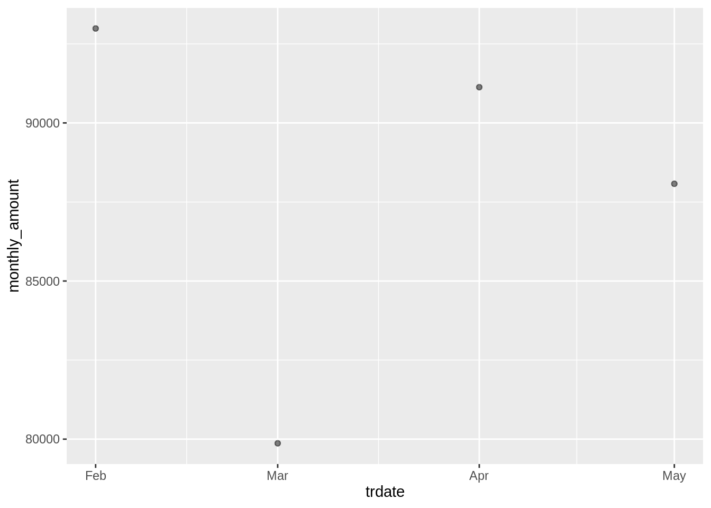
# the values are low but do not appear illigitimate
# industry 10 location 8 has a large difference between 2 sets of transactions
industry_10 %>%
filter(location == 8) %>%
ggplot(aes(x = trdate, y = monthly_amount, color = customer_id)) + geom_point()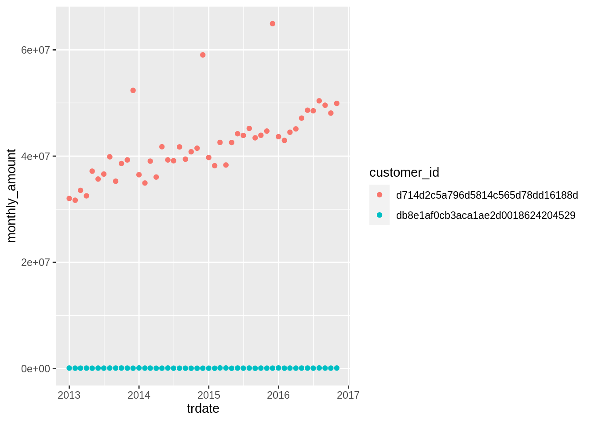
## only two customers in industry 10 location 8
i10_l8 <-industry_10 %>%
filter(location == 8)
# customer d714d2c5a796d5814c565d78dd16188d
i10_l8 %>%
filter(customer_id == "d714d2c5a796d5814c565d78dd16188d") %>%
ggplot(aes(x = trdate, y = monthly_amount)) + geom_point()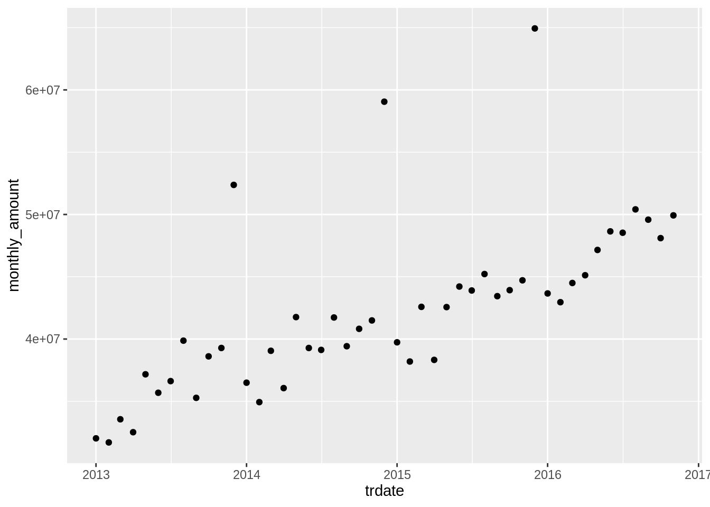
# transactions are very cyclic and high
# customer db8e1af0cb3aca1ae2d0018624204529
i10_l8 %>%
filter(customer_id == "db8e1af0cb3aca1ae2d0018624204529") %>%
ggplot(aes(x = trdate, y = monthly_amount)) + geom_point()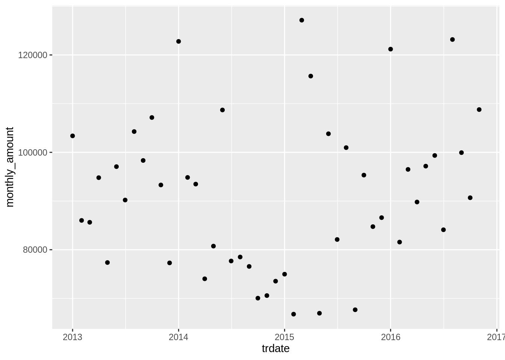
# Number of transactions per location
number_of_transactions_per_location <- as.data.frame(table(transactions$location))
names(number_of_transactions_per_location) <- c("location", count)
number_of_transactions_per_location## location
## 1 1
## 2 2
## 3 3
## 4 4
## 5 5
## 6 6
## 7 7
## 8 8
## 9 9
## 10 10
## function (x, ..., wt = NULL, sort = FALSE, name = "n", .drop = group_by_drop_default(x)) \n{\n groups <- group_vars(x)\n if (dots_n(...)) {\n x <- .group_by_static_drop(x, ..., add = TRUE, .drop = .drop)\n }\n x <- tally(x, wt = !!enquo( ...
## 1 17659
## 2 21410
## 3 6740
## 4 9351
## 5 9703
## 6 7446
## 7 7317
## 8 3478
## 9 4629
## 10 6514## [1] NA#Import new function for managing large plots
# Multiple plot function
#
# ggplot objects can be passed in ..., or to plotlist (as a list of ggplot objects)
# - cols: Number of columns in layout
# - layout: A matrix specifying the layout. If present, 'cols' is ignored.
#
# If the layout is something like matrix(c(1,2,3,3), nrow=2, byrow=TRUE),
# then plot 1 will go in the upper left, 2 will go in the upper right, and
# 3 will go all the way across the bottom.
#
multiplot <- function(..., plotlist=NULL, file, cols=1, layout=NULL) {
library(grid)
# Make a list from the ... arguments and plotlist
plots <- c(list(...), plotlist)
numPlots = length(plots)
# If layout is NULL, then use 'cols' to determine layout
if (is.null(layout)) {
# Make the panel
# ncol: Number of columns of plots
# nrow: Number of rows needed, calculated from # of cols
layout <- matrix(seq(1, cols * ceiling(numPlots/cols)),
ncol = cols, nrow = ceiling(numPlots/cols))
}
if (numPlots==1) {
print(plots[[1]])
} else {
# Set up the page
grid.newpage()
pushViewport(viewport(layout = grid.layout(nrow(layout), ncol(layout))))
# Make each plot, in the correct location
for (i in 1:numPlots) {
# Get the i,j matrix positions of the regions that contain this subplot
matchidx <- as.data.frame(which(layout == i, arr.ind = TRUE))
print(plots[[i]], vp = viewport(layout.pos.row = matchidx$row,
layout.pos.col = matchidx$col))
}
}
}